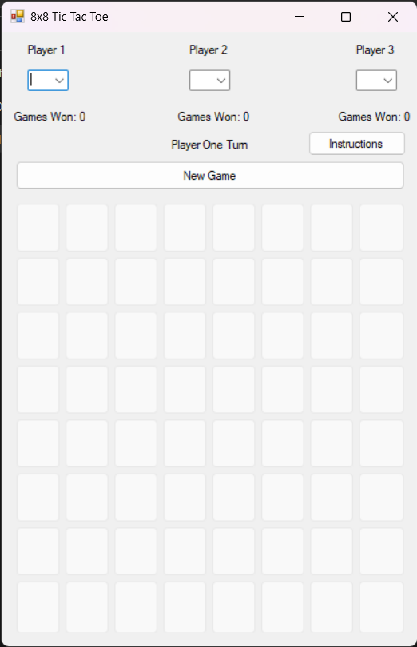

Programming

3-Player, 8x8 Tic Tac Toe
Originally written in Java as an assignment for Programming II, this small game has been re-written in C#, with some extra features added.
Each player selects an identifying character, making sure that each one is unique, and then takes turns placing that character on an 8x8 board.
The first player to place 4 in a row, either horizontally, vertically, or diagonally, wins the game, with the winning squares highlighted.